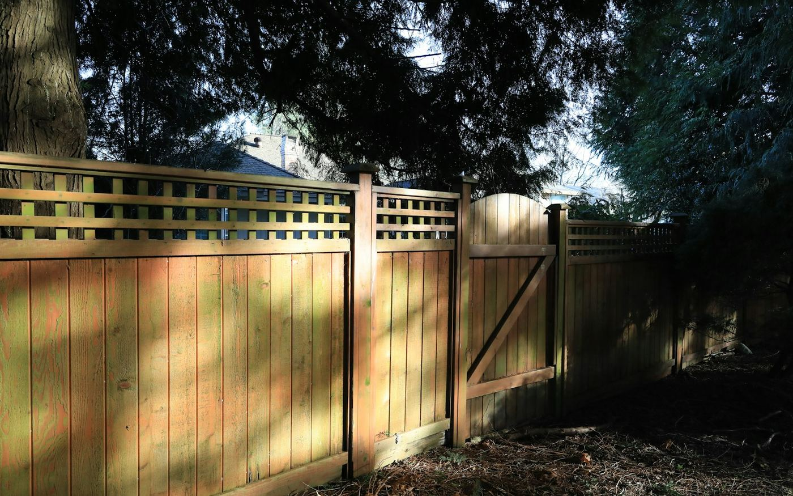

Fence installation
Fence Installation in Cornwall, Ontario
Privacy, picket, PVC, aluminum and chain link — set deep, set straight, and set on the right side of your property line.
Two things sink a fence job, and neither of them is the fence. The first is post depth: posts that do not reach below frost will lift, and once one post lifts the whole run goes out of line. The second is the property line — a fence built even a few inches over is a legal problem between neighbours long after the contractor has gone.
So we start with the boundary and the by-law, not the panels. We work from your survey where you have one, we arrange the underground locates that Ontario law requires before anyone puts a post hole in the ground, and we check the City's fence by-law for the height limits that apply to your yard — they are not the same in a front yard as they are in a back yard.

Scope of work
How we install a fence
Boundary and by-law check
We confirm where your line actually runs and what height is permitted for that part of your lot before we quote, so nothing has to come down later.
Underground locates
Locates are free and legally required in Ontario before digging. We place the request through Ontario One Call and wait for the clearance before a single hole is dug.
Posts set below frost
Holes augered below the frost line and set in concrete, spaced for the panel system so runs stay straight and gates keep their swing.
Gates that still work in year five
Properly braced gate posts, adjustable hinges, and hardware rated for the gate weight. A sagging gate is almost always an under-built gate post.
Grade following or stepping
On sloped yards we will show you the difference between racking the fence to follow the ground and stepping it down in panels, and what each one looks like when it is finished.
Cleanup and spoil removal
Auger spoil, offcuts and old fencing hauled away. Your yard goes back to being a yard the same day we finish.
Options
Fence types we install
Matched to what the fence is actually for — privacy, containment, or looks.
Wood privacy and cedar
Board-on-board, shadow-box and standard privacy in pressure-treated or cedar. The most private and the most customisable, and the option that takes the most maintenance. Cedar holds up longest without treatment.
- Full privacy
- Any height the by-law allows
- Stain or leave to weather
PVC and vinyl
No painting, no staining, no rot. Costs more up front than wood and cannot be modified on site the way wood can, but it looks the same in year twelve as it did on day one.
- Effectively zero maintenance
- Colour-fast
- Higher up-front cost
Aluminum and ornamental
For pool enclosures, front yards and anywhere you want a boundary without losing the view. Powder-coated aluminum will not rust and is light enough to span uneven ground cleanly.
- Pool-code compliant options
- Will not rust
- Keeps sightlines open
Chain link and farm fence
The most cost-effective way to enclose a large area or contain a dog. Galvanised or black vinyl-coated, with privacy slats if you want the screening without the cost of a board fence.
- Lowest cost per foot
- Ideal for large yards
- Slats available for privacy
Before anyone digs: locates are the law
In Ontario you must have underground utilities located before digging — including for fence posts. The service is free and is requested through Ontario One Call. Hitting a gas line or a buried service is dangerous and expensive, and the liability lands on whoever dug.
We place the locate request and wait for clearance on every job. If a fence contractor offers to start tomorrow without mentioning locates, that is the moment to ask why.
Service areas
Fencing across Cornwall & SD&G
Based in Cornwall and working across Stormont, Dundas and Glengarry. If your town is not listed, call us anyway — we travel.
FAQ
Fencing: common questions
How tall can my fence be in Cornwall?
The City's fence by-law sets maximum heights, and they differ between front yards and rear or side yards — front yard limits are lower, because of sightlines at driveways and corners. Pool enclosures have their own separate requirements. We check the current by-law against your specific lot before quoting rather than assuming, since the limits are also affected by corner lots and by whether the fence sits on a retaining wall.
Do I need a survey before you build?
Not always, but it is the safest thing you can bring us. If you have a survey we work from it. If you do not, we can work from visible boundary evidence and existing pins, but the risk of an encroachment sits with the property owner, so for a contested or tight boundary we would rather you get it surveyed than guess. It costs far less than moving a finished fence.
How deep do fence posts need to be?
Below the frost line for our area, set in concrete. Shallow posts are the single most common cause of a fence going crooked, and it usually shows up in the second or third spring. Gate posts get extra depth and bracing, because they carry a swinging load that the rest of the run does not.
Do I have to tell my neighbour?
You are not obliged to, but we would. If the fence sits on the shared line, Ontario's Line Fences Act contemplates the cost being shared, and a conversation before the posts go in prevents a dispute afterwards. If you would rather avoid the discussion entirely, we can build the fence fully inside your own property line instead.
Can you install a fence on a sloped or uneven yard?
Yes. There are two approaches: racking, where the panels follow the slope and the pickets stay vertical, and stepping, where each panel stays level and steps down, leaving triangular gaps at the bottom. Racking looks cleaner on a gentle grade; stepping suits a steeper one and some panel systems only allow one or the other. We will show you both before you decide.
Free quote
Get a free quote for your fencing project
Tell us what you are planning. We reply to every inquiry, usually within one business day.
Services
Other things we do
Deck building
Custom pressure-treated, cedar and composite decks engineered for Eastern Ontario frost.
Read more 03Siding installation
Vinyl, engineered wood and board-and-batten, with soffit, fascia and eavestrough.
Read more 04Window replacement
ENERGY STAR windows and doors installed to spec, air-sealed and properly flashed.
Read more 05Bathroom renovations
Full gut-and-rebuild bathrooms, tub-to-shower conversions and accessible walk-ins.
Read more 06Kitchen renovations
Layout changes, custom cabinetry, islands and finish carpentry done by one crew.
Read morePrefer to talk it through first?
Call us and describe what you are dealing with. We will tell you honestly whether it is a job worth doing now.